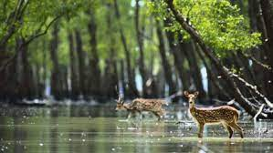
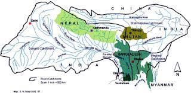

A Natural Wonder of the World-Sundarbans
This UNESCO World Heritage Site spans across Bangladesh and India, comprising the largest tidal halophytic mangrove forest in the world - carbon.wildlife.water.timber.renewables.recreation. carbon.
A Natural Haven
সুন্দরবন হলো বঙ্গোপসাগর উপকূলবর্তী অঞ্চলে অবস্থিত একটি প্রশস্ত বনভূমি যা বিশ্বের
প্রাকৃতিক বিস্ময়াবলির অন্যতম। পদ্মা, মেঘনা ও ব্রহ্মপুত্র নদীত্রয়ের অববাহিকার বদ্বীপ এলাকায়
অবস্থিত এই অপরূপ বনভূমি বাংলাদেশের খুলনা, সাতক্ষীরা ও বাগেরহাট জেলার কিছু অংশ এবং ভারতের
পশ্চিমবঙ্গ রাজ্যের দুই জেলা উত্তর চব্বিশ পরগনা ও দক্ষিণ চব্বিশ পরগনা জুড়ে বিস্তৃত। সমুদ্র
উপকূলবর্তী নোনা পরিবেশের সবচেয়ে বড় ম্যানগ্রোভ বন হিসেবে সুন্দরবন বিশ্বের সর্ববৃহৎ অখণ্ড
বনভূমি। ১০,০০০ বর্গ কিলোমিটার জুড়ে গড়ে ওঠা সুন্দরবনের ৬,৫১৭ বর্গ কিলোমিটার (৬৬%) রয়েছে
বাংলাদেশে এবং বাকি অংশ (৩৪%) রয়েছে ভারতের মধ্যে।
সর্বাধিক প্রচুর গাছের প্রজাতি হল সুন্দরী এবং গেওয়া। বনে ২৯০টি পাখি, ১২০টি মাছ, ৪২টি
স্তন্যপায়ী, ৩৫টি সরীসৃপ এবং আটটি উভচর প্রজাতিসহ ৪৫৩টি বন্যপ্রাণীর বাসস্থান রয়েছে।
মাছ এবং কিছু অমেরুদণ্ডী প্রাণী ছাড়া অন্য বন্যপ্রাণী হত্যা বা দখলের উপর সম্পূর্ণ নিষেধাজ্ঞা
থাকা সত্ত্বেও, মনে হচ্ছে বিংশ শতাব্দীতে হ্রাসপ্রাপ্ত জীববৈচিত্র্য বা প্রজাতির ক্ষতির একটি
সামঞ্জস্যপূর্ণ প্যাটার্ন রয়েছে, এবং বনের পরিবেশগত গুণমান হ্রাস পাচ্ছে। পশ্চিমবঙ্গের সুন্দরবন
জাতীয় উদ্যানের প্রশাসন ও ব্যবস্থাপনার দায়িত্ব বন অধিদপ্তর।
Explore Programs
Preview some of the 70+ programs available to landowners like you.
-
.jpg)
প্রাণীজগত
"সুন্দরবন, একটি ইউনেস্কোর ওয়ার্ল্ড হেরিটেজ সাইট, বন্যপ্রাণীর জন্য একটি স্বর্গ। এটি বেঙ্গল টাইগার, নোনা জলের কুমির এবং দাগযুক্ত হরিণের জনসংখ্যার জন্য বিখ্যাত। 260 টিরও বেশি পাখি প্রজাতির সাথে এটি পাখি পর্যবেক্ষকদের জন্য একটি স্বর্গ। ম্যানগ্রোভের এই অনন্য বাস্তুতন্ত্র বন জীববৈচিত্র্যের ভান্ডার।"
-

সুন্দরবনের সৌন্দর্য
"সুন্দরবনকে তার ইথেরিয়াল সৌন্দর্যে মন্ত্রমুগ্ধ। এর গোলকধাঁধা জলপথগুলি জমকালো ম্যানগ্রোভ বনের মধ্য দিয়ে বুনছে, যেখানে বাতাস অগণিত পাখির প্রজাতির গানের সাথে গুনগুন করে। সূর্য-চুম্বিত মাটির ফ্ল্যাটগুলি ভাটার সময় চিকচিক করে, একটি মন্ত্রমুগ্ধ করে এই অনন্য ল্যান্ডস্কেপের উপরে, যেখানে প্রকৃতির শৈল্পিকতা সর্বোচ্চ রাজত্ব করে।"
-
.jpeg)
ব্যুৎপত্তি
সুন্দরবনের আক্ষরিক অর্থ হল "সুন্দর বন"। বিকল্পভাবে, এটি প্রস্তাব করা হয়েছিল যে নামটি সমুদ্রবন , শোমুদ্রোবন, বা চন্দ্র-বন্ধে , একটি উপজাতির নাম। যাইহোক, শব্দের সম্ভাব্য উৎপত্তি হল সুন্দরী বা সুন্দরী , ম্যানগ্রোভ প্রজাতির স্থানীয় নাম Heritiera fomes এই এলাকায় প্রচুর পরিমাণে পাওয়া যায়।
-

ভূগোল
সুন্দরবনকে জোয়ার-ভাটার জলপথ, কাদামাটি এবং লবণ-সহনশীল ম্যানগ্রোভ বনের ছোট দ্বীপের একটি জটিল নেটওয়ার্ক দ্বারা ছেদ করা হয়েছে। জলপথের আন্তঃসংযুক্ত নেটওয়ার্ক বনের প্রায় প্রতিটি কোণে নৌকা দ্বারা অ্যাক্সেসযোগ্য করে তোলে। এলাকাটি বেঙ্গল টাইগার ( প্যানথেরা টাইগ্রিস ), পাশাপাশি পাখি, চিতল , কুমির এবং সাপের প্রজাতি সহ অসংখ্য প্রাণীর জন্য পরিচিত।
সুন্দরবন এর
ইতিহাস
সুন্দরবন এলাকায় মানব বসতির ইতিহাস মৌর্য যুগে (খ্রিস্টপূর্ব ৪র্থ-২য় শতাব্দী) থেকে পাওয়া যায়। বাগমারা ফরেস্ট ব্লকে একটি পরিত্যক্ত নগরীর ধ্বংসাবশেষ পাওয়া গেছে যা বাংলা লোককাহিনীতে মৌর্য-পূর্ব আধা-ঐতিহাসিক ব্যক্তিত্ব চাঁদ সদাগরকে দায়ী করা হয়। বাংলাদেশের সুন্দরবনের উত্তরে কপিলমুনি , পাইকগাছা উপজেলায় প্রত্নতাত্ত্বিক খননের ফলে মধ্যযুগের প্রথম দিকের নগর বসতির ধ্বংসাবশেষ পাওয়া যায় । মুঘল আমলে , বসতি স্থাপনের জন্য স্থানীয় শাসকরা বনভূমি ইজারা দিয়েছিল। ১৭৫৭ সালে, ব্রিটিশ ইস্ট ইন্ডিয়া কোম্পানি মুঘল সম্রাট দ্বিতীয় আলমগীরের কাছ থেকে সুন্দরবনের উপর মালিকানা অধিকার করে এবং ১৭৬৪ সালে এই অঞ্চলের মানচিত্র তৈরি করে। যাইহোক, পদ্ধতিগত বন ব্যবস্থাপনা শুরু হয় এক শতাব্দী পরে। 1869 সালে সুন্দরবনের এখতিয়ারের জন্য প্রথম বন ব্যবস্থাপনা বিভাগ প্রতিষ্ঠিত হয়েছিল। 1875 সালে 1865 সালের ভারতীয় বন আইন (1865 সালের আইন VIII) এর অধীনে ম্যানগ্রোভ বনের একটি বড় অংশ সংরক্ষিত বন হিসাবে ঘোষণা করা হয়েছিল। বনের অবশিষ্ট অংশগুলিকে পরের বছর একটি সংরক্ষিত বন ঘোষণা করা হয় এবং বন, যা এতদিন সিভিল প্রশাসন জেলা দ্বারা পরিচালিত ছিল, বন বিভাগের নিয়ন্ত্রণে রাখা হয়। একটি বন বিভাগ, যা মৌলিক বন ব্যবস্থাপনা এবং প্রশাসন ইউনিট, 1879 সালে আজকের খুলনা , বাংলাদেশের সদর দপ্তর সহ তৈরি করা হয়েছিল। প্রথম ব্যবস্থাপনা পরিকল্পনা 1893-1898 সময়ের জন্য লেখা হয়েছিল।
Members in this Team
-
01 Tanvir Israk Moon
(650) -
02 Sadd
(718) -
03 Rafi
(678) -
04 oli
(730) -
05 Noman
(634) -
06 Nasim
(738)
Hear from the Developer of the Website
-

The Charms of Bangladesh:
“Nestled in the heart of South Asia lies a land of unparalleled beauty and mystique: Bangladesh. Often overshadowed by its larger neighbors, this gem of a country boasts a rich tapestry of culture, history, and natural wonders waiting to be discovered. Among its many treasures, none perhaps are as captivating as the Sunderbans, a UNESCO World Heritage Site and the largest mangrove forest in the world.”
Bangladesh, with its vibrant cities, lush landscapes, and warm hospitality, offers a unique tapestry of experiences for travelers. Dhaka, the bustling capital, is a melting pot of culture and commerce, where ancient monuments stand juxtaposed against modern skyscrapers. The old city of Dhaka, with its narrow alleyways and bustling bazaars, provides a glimpse into the country's rich history and heritage. Beyond the urban sprawl, Bangladesh's rural landscapes beckon with their serene beauty. From the verdant tea gardens of Sylhet to the tranquil riverine vistas of the Sundarbans, there is no shortage of natural wonders to explore. But perhaps the crown jewel of Bangladesh's natural heritage is the Sundarbans, a sprawling mangrove forest that stretches across the delta of the Ganges, Brahmaputra, and Meghna rivers.
-

জান্নাত রক্ষা করা
“Despite its relatively small size, Bangladesh boasts a diverse range of landscapes. From the verdant hills of the Chittagong Hill Tracts to the tranquil beauty of its rivers and waterways, the country's geography is as varied as it is picturesque. The fertile plains of the Ganges-Brahmaputra delta, often referred to as the "Green Delta," support a thriving agricultural sector and sustain the livelihoods of millions.”
আমরা যেমন সুন্দরবনের বিস্ময় দেখে আশ্চর্য হই, পরিবেশের তত্ত্বাবধায়ক হিসাবে আমাদের দায়িত্ব মনে রাখা অপরিহার্য। টেকসই পর্যটন অনুশীলনকে সমর্থন করে এবং সংরক্ষণ প্রচেষ্টার পক্ষে সমর্থন করে, আমরা নিশ্চিত করতে সাহায্য করতে পারি যে ভবিষ্যত প্রজন্ম এই প্রাকৃতিক সম্পদের সৌন্দর্যে মুগ্ধ হতে থাকবে।